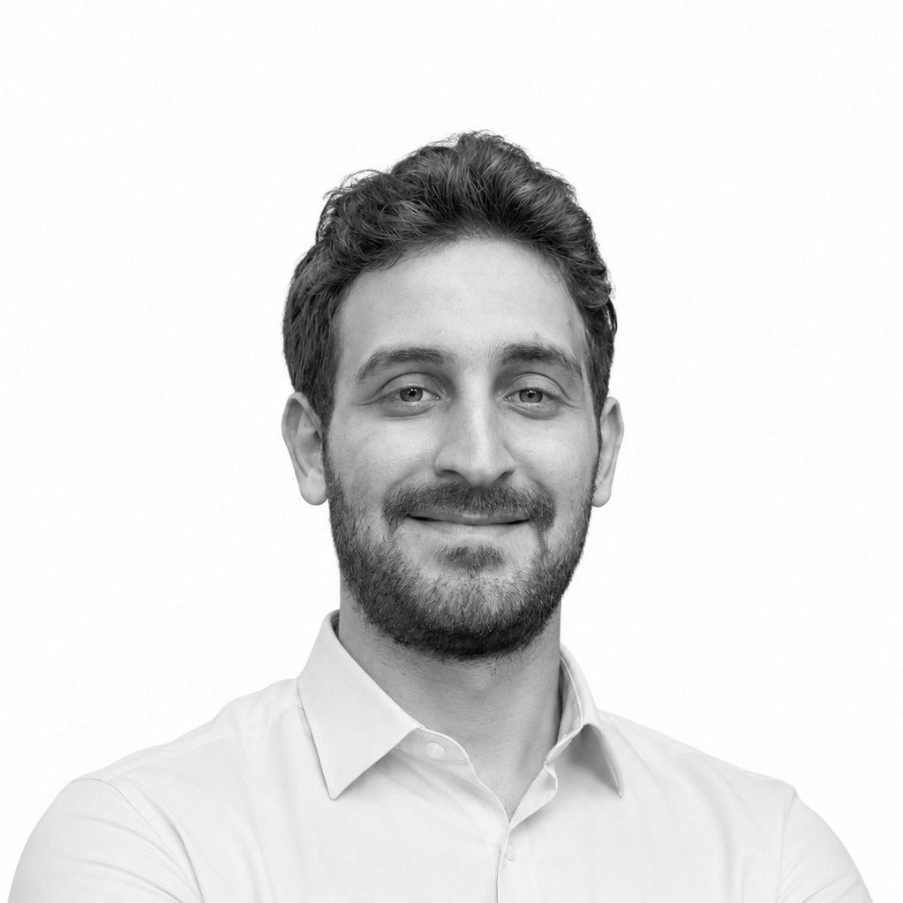

An industrial designer who speaks the same language as the engineering team.
With a background in mechatronics and robotics, I design without separating form from production reality.
Timeline
Industrial Designer & Mechanical Design Engineer, TUS Metallbau
Design and development of balcony systems, canopies, railings, steel structures and glass facades, ensuring compliance with engineering and building standards. Create 3D models, assemblies and production drawings; formulate BOMs; carry out on-site measurements and optimize designs for manufacturing, tolerances and assembly.
Industrial Design Intern, TUS Metallbau
Mechanical Design Engineer, ITU ROV Team
Worked on watertight enclosures, structural chassis and sensor/propulsion integration. The Pioneer Mk2 nose module design is mine, see the full case study.
Product Design Intern, Robotistan
Designed injection-molded enclosures, snap-fit connections and microcontroller integration for Arduino-based educational robotics kits. One of these, REX, shipped as a real product with its own assembly guide, see the full case study.
B.Sc. Industrial Design, Istanbul Technical University
Verified results
- ITU Graduation Project, 2nd Prize (Rockhounder; jury included Otokar and Arçelik representatives)
- FURNITUR 2023, Prize & Mention, Türkiye Tasarım Vakfı
- TEKNOFEST, Design & Presentation Category (Pioneer Mk2)
- MATE ROV Competition (Norway), 3rd Place with team's Explorer vehicle
- Design for Export, Finalist (OAIB & Ministry of Commerce)
How I work
Design
Product & mechanism design · CAD modeling · technical drawing & tolerance notation · system/service design
CAD & Rendering
HiCAD · SolidWorks · Rhino · Fusion 360 · KeyShot · V-Ray · Blender
Manufacturing knowledge
Sheet bending · injection molding · 3D printing (FDM) · steel structure & glass facade detailing
Prototyping & Visual Communication
Hand sketching · mock-up making · Photoshop · Illustrator
Languages
Turkish (native) · English (C1) · German (B1)